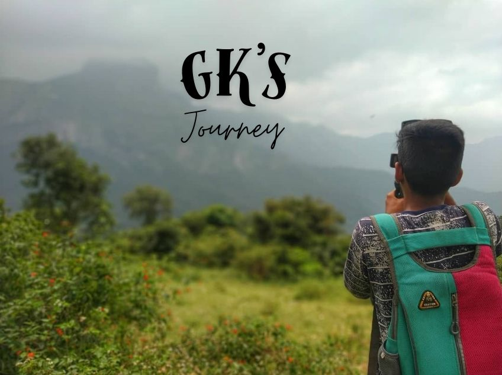

112+ Epic Travel Vlogs Await!
Hey there, fellow explorer! I'm Gokulakrishnan, your fun guide to the wildest travels. From hidden beaches to mountain madness, we've got 112+ vlogs packed with laughs, tips, and "oops" moments!
Dive into my YouTube Channel now – your passport to epic escapes!
No more dull days! Click below for your adventure kickstart (with a surprise message!).
P.S. This site auto-redirects wanderers from GK's Journey – now with 10x more fun! 🎉